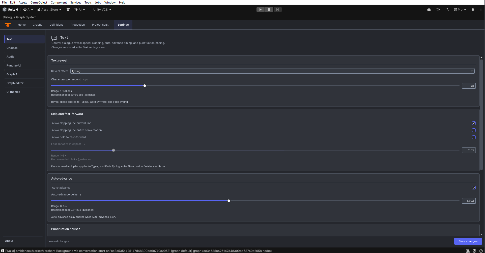
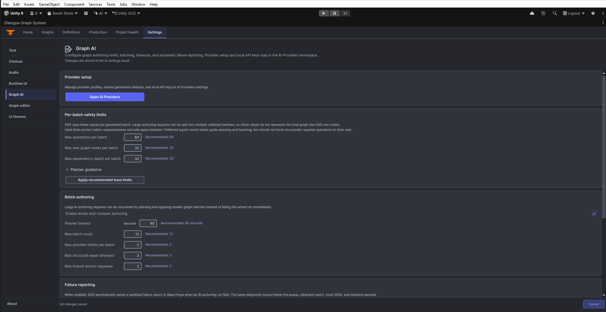

Settings System & Theming
DGS settings define runtime reading, choice, input, audio, and optional UI behavior. Dialogue themes and UI layout presets are related presentation tools, but they are authored separately from the runtime settings asset.
Runtime model
DialogSettingsRuntime loads the master asset at Assets/DialogGraphSystem/Resources/DialogSettingsSO/DialogSystemSettings.asset through the Resources key DialogSettingsSO/DialogSystemSettings. The master references text, choice, input, audio, and runtime-UI settings; localization runtime configuration is separate. A DialogManager can provide local overrides for the settings it exposes. Packaged defaults are inputs; runtime player preferences are saved separately.
Settings categories
- Text: reveal mode, reading speed, skip/fast-forward, auto-advance, punctuation pauses, and reveal sound.
- Choices: navigation, selection, hotkeys, and choice presentation behavior.
- Input: configured dialogue advance, choice, skip, and cancel controls. The optional Input System package is not required for core DGS runtime.
- Audio: dialogue voice and effects/reveal sound settings.
- Runtime UI: visibility and behavior for settings, history, language, theme, and dialogue controls where the configured UI supports them.
- Graph editor: canvas and editor presentation preferences live in their own panel, separate from runtime settings.
- Graph AI: an optional panel appears when the AI Extension is available; provider setup is covered in the separate AI guide.
- UI themes: theme workbench settings are separate from the runtime settings master and dialogue-theme assets.
- About: package information is shown in its own editor panel.
Editor window
Open Tools > Beka Forge > Dialogue Graph System > Open Editor and select Settings. The window separates runtime configuration (Text, Choices, Audio, Runtime UI) from editor tools (Graph editor, optional Graph AI, UI themes, and About). Choose Restore Defaults carefully; it restores settings state and is not a command to discard project content.
Dialogue themes and UI Themes
A DialogThemeSO contains the core dialogue UI’s sprite, color, and font roles. DialogUIManager selects and applies a default or mapped theme to the active dialogue UI. Open Tools > Beka Forge > Dialogue Graph System > Open Editor, choose Settings, then open the UI themes category and its theme editor. The workbench manages catalog entries and layout presets; these are separate assets from the core DialogThemeSO. Do not confuse a dialogue visual theme with DialogSettingsThemeSO, which configures the separate runtime settings overlay.
What a theme controls
- Dialogue surface and controls - dialogue background, nameplate/portrait roles, choice states, history/settings buttons, autoplay and skip controls.
- History - panel, title, line/choice rows, close control, and text roles.
- Typography and color - speaker, dialogue, choice, and history text roles, with font overrides and numeric roles used by dynamic rows.
- Choice rows - an optional choice-row prefab override and assigned visual roles.
Creating a custom theme
- For a catalog theme, open the UI Themes workbench from Settings and create or duplicate a catalog entry. The DGS theme catalog and
DialogThemeSOare distinct asset types. - In the selected theme, assign only the roles you intend to override; unassigned roles keep the configured baseline presentation.
- For a core
DialogThemeSO, assign the asset as the default or in the appropriate mapping onDialogUIManager, then test the runtime UI.
Included core themes
The core package includes these two legacy-compatible DialogThemeSO assets. The UI Themes module also supplies its own theme catalog and layout presets at Assets/Beka Forge/Dialogue Graph System/UI Themes/Definitions/.
| Theme | Style |
|---|---|
| Fantasy RPG | Core dialogue theme asset. |
| Sci-Fi HUD | Core dialogue theme asset. |
For theme appearance, locale assets, and runtime visibility, continue to Camera, Interaction, and UI Workflows and the Inspector Reference.
Try the settings example: the focused preview opens on the Runtime UI category. Toggle Show speaker name or Show choice panel; the sandbox checkboxes update only its example settings state.
Try the theme example: first open the collapsed Sample content foldout. Type in Sample line and watch the preview update immediately. Toggle Show portrait and confirm your edited line remains. The browser Save control reports that nothing was written; use the Unity workbench to save assets.
Current editor screenshots

Text with reveal, skipping, and auto-advance controls." loading="lazy" width="1923" height="1007">